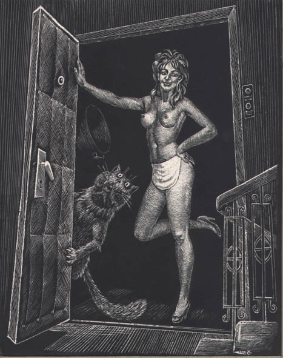

Вести из Ялты
Телеграммы Лиходеева и переполох в кабинете Римского
Краткое содержание главы
В кабинете финансового директора Варьете Григория Даниловича Римского и администратора Варенухи творилось невообразимое. Лиходеев исчез, касса трещала от желающих увидеть сеанс черной магии, а со стола безостановочно звонил телефон и сыпались телеграммы из Ялты.
Сначала телеграмма требовала проверить, действительно ли Степа находится в Крыму, затем пришла молния из ялтинского угрозыска с просьбой подтвердить личность некоего гражданина в кальсонах, утверждающего, будто его перебросило с Садовой за одну минуту. Варенуха отправился отнести материалы в органы — и по дороге, в садике у уборной, попал в руки косматого Азазелло и рыжей красавицы Геллы.
В то время, как случилось несчастье с Никанором Ивановичем, недалеко от дома N 302-бис, на той же Садовой, в кабинете финансового директора Варьете Римского находились двое: сам Римский и администратор Варьете Варенуха.
Большой кабинет на втором этаже театра двумя окнами выходил на Садовую, а одним, как раз за спиною финдиректора, сидевшего за письменным столом, в летний сад Варьете, где помещались прохладительные буфеты, тир и открытая эстрада. Убранство кабинета, помимо письменного стола, заключалось в пачке старых афиш, висевших на стене, маленьком столике с графином воды, четырех креслах и в подставке в углу, на которой стоял запыленный давний макет какого-то обозрения. Ну, само собой разумеется, что, кроме того, была в кабинете небольших размеров потасканная, облупленная несгораемая касса, по левую руку Римского, рядом с письменным столом.
Сидящий за столом Римский с самого утра находился в дурном расположении духа, а Варенуха, в противоположность ему, был очень оживлен и как-то особенно беспокойно деятелен. Между тем выхода его энергии не было.
Варенуха прятался сейчас в кабинете у финдиректора от контрамарочников, которые отравляли ему жизнь, в особенности в дни перемены программы. А сегодня как раз и был такой день.
Лишь только начинал звенеть телефон, Варенуха брал трубку и лгал в нее:
– Кого? Варенуху? Его нету. Вышел из театра.
– Позвони ты, пожалуйста, Лиходееву еще раз, – раздраженно сказал Римский.
– Да нету его дома. Я уже Карпова посылал. Никого нету в квартире.
– Черт знает что такое, – шипел Римский, щелкая на счетной машинке.
Дверь открылась, и капельдинер втащил толстую пачку только что напечатанных дополнительных афиш. На зеленых листах крупными красными буквами было написано:
Сегодня и ежедневно в театре Варьете
сверх программы:
Профессор Воланд
Сеансы черной магии с полным ее разоблачением
Варенуха, отойдя от афиши, наброшенной им на макет, полюбовался на нее и приказал капельдинеру немедленно пустить все экземпляры в расклейку.
– Хорошо, броско, – заметил Варенуха по уходе капельдинера.
– А мне до крайности не нравится вся эта затея, – злобно поглядывая на афишу сквозь роговые очки, ворчал Римский, – и вообще я удивляюсь, как ему разрешили это поставить!
– Нет, Григорий Данилович, не скажи, это очень тонкий шаг. Тут вся соль в разоблачении.
– Не знаю, не знаю, никакой тут соли нет, и всегда он придумает что-нибудь такое! Хоть бы показал этого мага. Ты-то его видел? Откуда он его выкопал, черт его знает!
Выяснилось, что Варенуха, так же как и Римский, не видел мага. Вчера Степа («как сумасшедший», по выражению Римского) прибежал к финдиректору с написанным уже черновиком договора, тут же велел его переписать и выдать деньги. И маг этот смылся, и никто его не видел, кроме самого Степы.
Римский вынул часы, увидел, что они показывают уже пять минут третьего, и совершенно остервенился. В самом деле! Лиходеев звонил примерно в одиннадцать часов, сказал, что придет примерно через полчаса, и не только не пришел, но и из квартиры исчез!
– У меня же дело стоит! – уже рычал Римский, тыча пальцем в груду неподписанных бумаг.
– Уж не попал ли он, как Берлиоз, под трамвай? – говорил Варенуха, держа у уха трубку, в которой слышались густые, продолжительные и совершенно безнадежные сигналы.
– А хорошо было бы... – чуть слышно сквозь зубы сказал Римский.
В этот самый момент в кабинет вошла женщина в форменной куртке, в фуражке, в черной юбке и в тапочках. Из маленькой сумки на поясе женщина вынула беленький квадратик и тетрадь и спросила:
– Где тут Варенуха? Сверхмолния вам. Распишитесь.
Варенуха чиркнул какую-то закорючку в тетради у женщины, и лишь только дверь за той захлопнулась, вскрыл квадратик.
Прочитав телеграмму, он поморгал глазами и передал квадратик Римскому.
В телеграмме было напечатано следующее: «Ялты Москву Варьете сегодня половину двенадцатого угрозыск явился шатен ночной сорочке брюках без сапог психический назвался Лиходеевым директором Варьете молнируйте Ялтинский розыск где директор Лиходеев».
– Здравствуйте, я ваша тетя! – воскликнул Римский и добавил: – Еще сюрприз!
– Лжедмитрий, – сказал Варенуха и заговорил в трубку телефона: – Телеграф? Счет Варьете. Примите сверхмолнию... Вы слушаете? «Ялта, угрозыск... Лиходеев Москве финдиректор Римский»...
Независимо от сообщения о Ялтинском самозванце, Варенуха опять принялся по телефону разыскивать Степу где попало и, натурально, нигде его не нашел. Как раз тогда, когда Варенуха, держа в руках трубку, раздумывал о том, куда бы ему еще позвонить, вошла та самая женщина, что принесла и первую молнию, и вручила Варенухе новый конвертик. Торопливо вскрыв его, Варенуха прочитал напечатанное и свистнул.
– Что еще? – нервно дернувшись, спросил Римский.
Варенуха молча подал ему, телеграмму и финдиректор увидел в ней слова: «Умоляю верить брошен Ялту гипнозом Воланда молнируйте угрозыску подтверждение личности Лиходеев».
Римский и Варенуха, касаясь друг друга головами, перечитывали телеграмму, а перечитав, молча уставились друг на друга.
– Граждане! – вдруг рассердилась женщина, – расписывайтесь, а потом уж будете молчать сколько угодно! Я ведь молнии разношу.
Варенуха, не спуская глаз с телеграммы, криво расчеркнулся в тетради, и женщина исчезла.
– Ты же с ним в начале двенадцатого разговаривал по телефону? – в полном недоумении заговорил администратор.
– Да смешно говорить! – пронзительно закричал Римский, – разговаривал или не разговаривал, а не может он быть сейчас в Ялте! Это смешно!
– Он пьян... – сказал Варенуха.
– Кто пьян? – спросил Римский, и опять оба уставились друг на друга.
Что телеграфировал из Ялты какой-то самозванец или сумасшедший, в этом сомнений не было; но вот что было странно: откуда же Ялтинский мистификатор знает Воланда, только вчера приехавшего в Москву? Откуда он знает о связи между Лиходеевым и Воландом?
– «Гипнозом...» – повторял Варенуха слово из телеграммы, – откуда же ему известно о Воланде? – он поморгал глазами и вдруг вскричал решительно: – Да нет, чепуха, чепуха, чепуха!
– Где он остановился, этот Воланд, черт его возьми? – спросил Римский.
Варенуха немедленно соединился с интуристским бюро и, к полному удивлению Римского, сообщил, что Воланд остановился в квартире Лиходеева. Набрав после этого номер Лиходеевской квартиры, Варенуха долго слушал, как густо гудит в трубке. Среди этих гудков откуда-то издалека послышался тяжкий, мрачный голос, пропевший: «...скалы, мой приют...» – и Варенуха решил, что в телефонную сеть откуда-то прорвался голос из радиотеатра.
– Не отвечает квартира, – сказал Варенуха, кладя трубку на рычаг, – попробовать разве позвонить еще...
Он не договорил. В дверях появилась все та же женщина, и оба, и Римский и Варенуха, поднялись ей навстречу, а она вынула из сумки уже не белый, а какой-то темный листок.
– Это уже становится интересно, – процедил сквозь зубы Варенуха, провожая взглядом поспешно уходящую женщину. Первый листком овладел Римский.
На темном фоне фотографической бумаги отчетливо выделялись черные писаные строки:
«Доказательство мой почерк моя подпись молнируйте подтверждение установите секретное наблюдение Воландом Лиходеев».
За двадцать лет своей деятельности в театрах Варенуха видал всякие виды, но тут он почувствовал, что ум его застилается как бы пеленою, и он ничего не сумел произнести, кроме житейской и притом совершенно нелепой фразы:
– Этого не может быть!
Римский же поступил не так. Он поднялся, открыл дверь, рявкнул в нее курьерше, сидящей на табуретке:
– Никого, кроме почтальонов, не впускать! – и запер кабинет на ключ.
Затем он достал из письменного стола кипу бумаг и начал тщательно сличать жирные, с наклоном влево, буквы в фотограмме с буквами в Степиных резолюциях и в его же подписях, снабженных винтовой закорючкой. Варенуха, навалившись на стол, жарко дышал в щеку Римского.
– Это его почерк, – наконец твердо сказал финдиректор, а Варенуха отозвался, как эхо:
– Его.
Вглядевшись в лицо Римского, администратор подивился перемене, происшедшей в этом лице. И без того худой финдиректор как будто еще более похудел и даже постарел, а глаза его в роговой оправе утратили свою обычную колючесть, и появилась в них не только тревога, но даже как будто печаль.
Варенуха проделал все, что полагается человеку в минуты великого изумления. Он и по кабинету пробежался, и дважды вздымал руки, как распятый, и выпил целый стакан желтоватой воды из графина, и восклицал:
– Не понимаю! Не по-ни-ма-ю!
Римский же смотрел в окно и напряженно о чем-то думал. Положение финдиректора было очень затруднительно. Требовалось тут же, не сходя с места, изобрести обыкновенные объяснения явлений необыкновенных.
Прищурившись, финдиректор представил себе Степу в ночной сорочке и без сапог влезающим сегодня около половины двенадцатого в какой-то невиданный сверхбыстроходный самолет, а затем его же, Степу, и тоже в половине двенадцатого, стоящим в носках на аэродроме в Ялте... черт знает что такое!
Может быть, не Степа сегодня говорил с ним по телефону из собственной своей квартиры? Нет, это говорил Степа! Ему ли не знать Степиного голоса! Да если бы сегодня и не Степа говорил, то ведь не далее чем вчера, под вечер, Степа из своего кабинета явился в этот самый кабинет с этим дурацким договором и раздражал финдиректора своим легкомыслием. Как это он мог уехать или улететь, ничего не сказав в театре? Да если бы и улетел вчера вечером, к полудню сегодняшнего дня не долетел бы. Или долетел бы?
– Сколько километров до Ялты? – спросил Римский.
Варенуха прекратил свою беготню и заорал:
– Думал! Уже думал! До Севастополя по железной дороге около полутора тысяч километров. Да до Ялты накинь еще восемьдесят километров. Но по воздуху, конечно, меньше.
Гм... Да... Ни о каких поездах не может быть и разговора. Но что же тогда? Истребитель? Кто и в какой истребитель пустит Степу без сапог? Зачем? Может быть, он снял сапоги, прилетев в Ялту? То же самое: зачем? Да и в сапогах в истребитель его не пустят! Да и истребитель тут ни при чем. Ведь писано же, что явился в угрозыск в половине двенадцатого дня, а разговаривал он по телефону в Москве... позвольте-ка... тут перед глазами Римского возник циферблат его часов... Он припоминал, где были стрелки. Ужас! Это было в двадцать минут двенадцатого. Так что же это выходит? Если предположить, что мгновенно после разговора Степа кинулся на аэродром и достиг его за пять, скажем, минут, что, между прочим, тоже немыслимо, то выходит, что самолет, снявшись тут же, в пять минут покрыл более тысячи километров? Следовательно, в час он покрывает более двенадцати тысяч километров!!! Этого не может быть, а значит, его нет в Ялте.
Что же остается? Гипноз? Никакого такого гипноза, чтобы швырнуть человека за тысячу километров, на свете нету! Стало быть, ему мерещится, что он в Ялте! Ему-то, может быть, и мерещится, а Ялтинскому угрозыску тоже мерещится? Ну, нет, извините, этого не бывает!... Но ведь телеграфируют они оттуда?
Лицо финдиректора было буквально страшно. Ручку двери снаружи в это время крутили и дергали, и слышно было, как курьерша за дверями отчаянно кричала:
– Нельзя! Не пущу! Хоть зарежьте!! Заседание!
Римский, сколько мог, овладел собою, взял телефонную трубку и сказал в нее:
– Дайте сверхсрочный разговор с Ялтой.
«Умно!» – мысленно воскликнул Варенуха.
Но разговор с Ялтой не состоялся. Римский положил трубку и сказал:
– Как назло, линия испортилась.
Видно было, что порча линии его почему-то особенно сильно расстроила и даже заставила задуматься. Подумав немного, он опять взялся за трубку одной рукой, другой стал записывать то, что говорил в трубку:
– Примите сверхмолнию. Варьете. Да. Ялта. Угрозыск. Да. «Сегодня около половины двенадцатого Лиходеев говорил мною телефону Москве, точка. После этого на службу не явился и разыскать его телефонам не можем, точка. Почерк подтверждаю, точка. Меры наблюдения указанным артистом принимаю. Финдиректор Римский».
«Очень умно!» – подумал Варенуха, но не успел подумать как следует, как в голове у него пронеслось слово: «Глупо! Не может быть он в Ялте!»
Римский же тем временем сделал следующее: аккуратно сложил все полученные телеграммы и копию со своей в пачку, пачку вложил в конверт, заклеил его, надписал на нем несколько слов и вручил его Варенухе, говоря.
– Сейчас же, Иван Савельевич, лично отвези. Пусть там разбирают.
«А вот это действительно умно!» – подумал Варенуха и спрятал конверт в свой портфель. Затем он еще раз на всякий случай навертел на телефоне номер Степиной квартиры, прислушался и радостно и таинственно замигал и загримасничал. Римский вытянул шею.
– Артиста Воланда можно попросить? – сладко спросил Варенуха.
– Они заняты, – ответила трубка дребезжащим голосом, – а кто спрашивает?
– Администратор Варьете Варенуха.
– Иван Васильевич? – радостно вскричала трубка, – страшно рад слышать ваш голос! Как ваше здоровье?
– Мерси, – изумленно ответил Варенуха, – а с кем я говорю?
– Помощник, помощник его и переводчик Коровьев, – трещала трубка, – весь к вашим услугам, милейший Иван Савельевич! Распоряжайтесь мной как вам будет угодно. Итак?
– Простите, что, Степана Богдановича Лиходеева сейчас нету дома?
– Увы, нету! Нету! – кричала трубка, – уехал.
– А куда?
– За город кататься на машине.
– К... как? Ка... кататься? А когда же он вернется?
– А сказал, подышу свежим воздухом и вернусь!
– Так... – растерянно сказал Варенуха, – мерси. Будьте добры передать месье Воланду, что выступление его сегодня в третьем отделении.
– Слушаю. Как же. Непременно. Срочно. Всеобязательно. Передам, – отрывисто стукала трубка.
– Всего доброго, – удивляясь, сказал Варенуха.
– Прошу принять, – говорила трубка, – мои наилучшие, наигорячейшие приветы и пожелания! Успехов! Удач! Полного счастья. Всего!
– Ну, конечно! Я же говорил! – возбужденно кричал администратор, – никакая не Ялта, а он уехал за город!
– Ну, если это так, – бледнея от злобы, заговорил финдиректор, – то уж это действительно свинство, которому нет названия!
Тут администратор подпрыгнул и закричал так, что Римский вздрогнул:
– Вспомнил! Вспомнил! В Пушкино открылась чебуречная «Ялта»! Все понятно! Поехал туда, напился и теперь оттуда телеграфирует!
– Ну, уж это чересчур, – дергаясь щекой, ответил Римский, и в глазах его горела настоящая тяжелая злоба, – ну что ж, дорого ему эта прогулка обойдется, – тут он вдруг споткнулся и нерешительно добавил: – Но как же, ведь угрозыск...
– Это вздор! Его собственные шуточки, – перебил экспансивный администратор и спросил: – А пакет-то везти?
– Обязательно, – ответил Римский.
И опять открылась дверь, и вошла та самая... «Она!» – почему-то с тоской подумал Римский. И оба встали навстречу почтальонше.
На этот раз в телеграмме были слова:
«Спасибо подтверждение срочно пятьсот угрозыск мне завтра вылетаю Москву Лиходеев».
– Он с ума сошел... – слабо сказал Варенуха.
Римский же позвенел ключом, вынул из ящика несгораемой кассы деньги, отсчитал пятьсот рублей, позвонил, вручил курьеру деньги и послал его на телеграф.
– Помилуй, Григорий Данилович, – не веря своим глазам, проговорил Варенуха, – по-моему, ты зря деньги посылаешь.
– Они придут обратно, – отозвался Римский тихо, – а вот он сильно ответит за этот пикничок, – и добавил, указывая на портфель Варенухи: – Поезжай, Иван Савельевич, не медли.
И Варенуха с портфелем выбежал из кабинета.
Он спустился в нижний этаж, увидел длиннейшую очередь возле кассы, узнал от кассирши, что та через час ждет аншлага, потому что публика прямо валом пошла, лишь только увидела дополнительную афишу, велел кассирше загнуть и не продавать тридцать лучших мест в ложах и партере, выскочив из кассы, тут же на ходу отбился от назойливых контрамарочников и нырнул в свой кабинетик, чтобы захватить кепку. В это время затрещал телефон.
– Да! – крикнул Варенуха.
– Иван Савельевич? – осведомилась трубка препротивным гнусавым голосом.
– Его нет в театре! – крикнул было Варенуха, но трубка сейчас же перебила:
– Не валяйте дурака, Иван Савельевич, а слушайте. Телеграммы эти никуда не носите и никому не показывайте.
– Кто это говорит? – взревел Варенуха, – прекратите, гражданин, эти штучки! Вас сейчас же обнаружат! Ваш номер?
– Варенуха, – отозвался все тот же гадкий голос, – ты русский язык понимаешь? Не носи никуда телеграммы.
– А, так вы не унимаетесь? – закричал администратор в ярости, – ну смотрите же! Поплатитесь вы за это, – он еще прокричал какую-то угрозу, но замолчал, потому что почувствовал, что в трубке его никто уже не слушает.
Тут в кабинетике как-то быстро стало темнеть. Варенуха выбежал, захлопнув за собою дверь и через боковой ход устремился в летний сад.
Администратор был возбужден и полон энергии. После наглого звонка он не сомневался в том, что хулиганская шайка проделывает скверные шуточки и что эти шуточки связаны с исчезновением Лиходеева. Желание изобличить злодеев душила администратора, и, как это ни странно, в нем зародилось предвкушение чего-то приятного. Так бывает, когда человек стремится стать центром внимания, принести куда-нибудь сенсационное сообщение.
В саду ветер дунул в лицо администратору и засыпал ему глаза песком, как бы преграждая путь, как бы предостерегая. Хлопнула во втором этаже рама так, что чуть не вылетели стекла, в вершинах кленов и лип тревожно прошумело, потемнело и посвежело. Администратор протер глаза и увидел, что над Москвой низко ползет желтобрюхая грозовая туча. Вдали густо заворчало.
Как ни торопился Варенуха, неодолимое желание потянуло его забежать на секунду в летнюю уборную, чтобы на ходу проверить, одел ли монтер в сетку лампу.
Пробежав мимо тира, Варенуха попал в густую заросль сирени, в которой стояло голубоватое здание уборной. Монтер оказался аккуратным человеком, лампа под крышей в мужском отделении была уже обтянута металлической сеткой, но огорчило администратора то, что даже в предгрозовом потемнении можно было разобрать, что стены уже исписаны углем и карандашом.
– Ну, что же это за!... – начал было администратор и вдруг услышал за собою голос, мурлыкнувший:
– Это вы, Иван Савельевич?
Варенуха вздрогнул, обернулся и увидел за собою какого-то небольшого толстяка, как показалось, с кошачьей физиономией.
– Ну я, – неприязненно ответил Варенуха.
– Очень, очень приятно, – писклявым голосом отозвался котообразный толстяк и вдруг, развернувшись, ударил Варенуху по уху так, что кепка слетела с головы администратора и бесследно исчезла в отверстии сидения.
От удара толстяка вся уборная осветилась на мгновение трепетным светом, и в небе отозвался громовой удар. Потом еще раз сверкнуло, и перед администратором возник второй – маленький, но с атлетическими плечами, рыжий, как огонь, один глаз с бельмом, рот с клыком. Этот второй, будучи, очевидно, левшой съездил администратору по другому уху. В ответ опять-таки грохнуло в небе, и на деревянную крышу уборной обрушился ливень.
– Что вы, товари... – прошептал ополоумевший администратор, сообразил тут же, что слово «товарищи» никак не подходит к бандитам, напавшим на человека в общественной уборной, прохрипел: – гражда... – смекнул, что и это название они не заслуживают, и получил третий страшный удар неизвестно от кого из двух, так что кровь из носу хлынула на толстовку.
– Что у тебя в портфеле, паразит? – пронзительно прокричал похожий на кота, – телеграммы? А тебя предупредили по телефону, чтобы ты их никуда не носил? Предупреждали, я тебя спрашиваю?
– Предупрежди... дали... дили... – задыхаясь ответил администратор.
– А ты все-таки побежал? Дай сюда портфель, гад! – тем самым гнусавым голосом, что был слышен в телефоне, крикнул второй и выдрал портфель из трясущихся рук Варенухи.
И оба подхватили администратора под руки, выволокли его из сада и понеслись с ним по Садовой. Гроза бушевала с полной силой, вода с грохотом и воем низвергалась в канализационные отверстия, всюду пузырилось, вздувались волны, с крыш хлестало мимо труб, из подворотен бежали пенные потоки. Все живое смылось с Садовой, и спасти Ивана Савельевича было некому. Прыгая в мутных реках и освещаясь молниями, бандиты в одну секунду доволокли полуживого администратора до дома N 302-бис, влетели с ним в подворотню, где к стенке жались две босоногие женщины, свои туфли и чулки держащие в руках. Затем кинулись в шестой подъезд, и близкий к безумию Варенуха был вознесен на пятый этаж и брошен на пол в хорошо знакомой ему полутемной передней квартиры Степы Лиходеева.

Тут оба разбойника сгинули, а вместо них появилась в передней совершенно нагая девица – рыжая, с горящими фосфорическими глазами.
Варенуха понял, что это-то и есть самое страшное из всего, что приключилось с ним, и, застонав, отпрянул к стене. А девица подошла вплотную к администратору и положила ладони рук ему на плечи. Волосы Варенухи поднялись дыбом, потому что даже сквозь холодную, пропитанную водой ткань толстовки он почувствовал, что ладони эти еще холоднее, что они холодны ледяным холодом.
– Дай-ка я тебя поцелую, – нежно сказала девица, и у самых его глаз оказались сияющие глаза. Тогда Варенуха лишился чувств и поцелуя не ощутил.